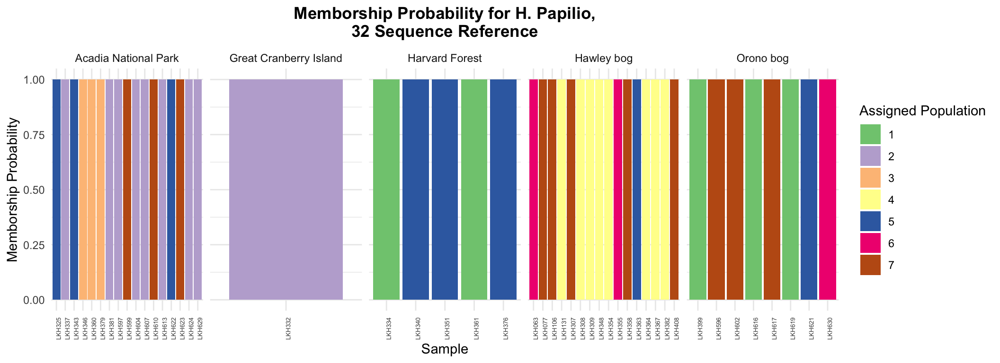
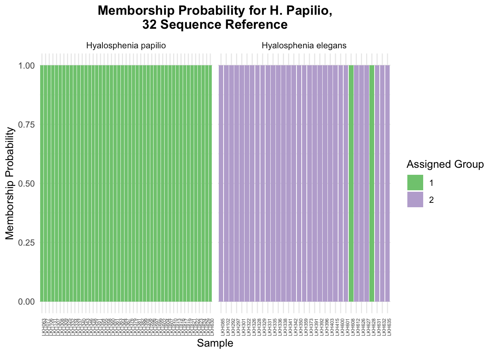
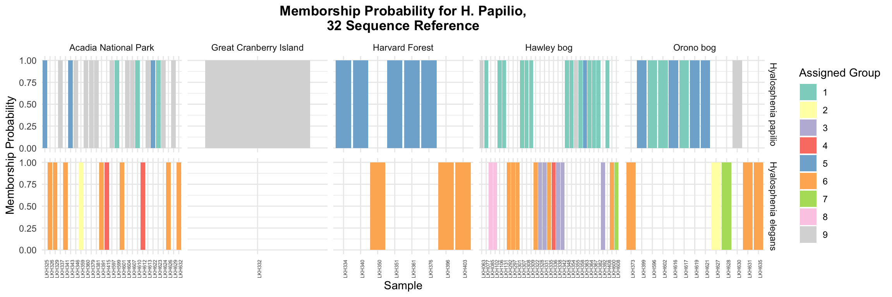

We will be working with a genlight object for this analysis, so we convert the vcfR object to a genlight and add the population information.
Discriminant analysis of principal components is a multivariate approach that divides variance into within-group variance and between-group variance to discriminate between groups. This enables the identification of genetic clusters, and the clusters identified by the model can be compared by those expected from geographic information. This provides a quality alternative for clustering without making assumptions about the randomness of mating, which may be unknown in microbial species, as is the case with H. papilio.
To perform DAPC analysis, the first step is to determine the optimal number of clusters. Once we do so, we can compare the detected clusters with the geography of the samples.
### DAPC analysis
#find optimum number of clusters
#run this line of code without the n.pca and n.clust arguments, and use the plot to identify the best values for these arguments
#for number of clusters, look for local minimum
#for number of PCAs, look at point at which additional PCAs do not explain a significant amount of variance
clust <- find.clusters(pap_76_genlight, max.n.clust = 15, n.pca = 40, n.clust = 7)
#compare to the actual populations
table(pop(pap_76_genlight), clust$grp )##
## 1 2 3 4 5 6 7
## Acadia National Park 3 1 3 8 2 0 0
## Great Cranberry Island 0 0 0 1 0 0 0
## Harvard Forest 0 0 5 0 0 0 0
## Hawley bog 0 4 1 0 2 2 7
## Orono bog 0 0 4 0 3 1 0With the cluster information, we can perform the DAPC analysis with the dapc() function.
This allows us to create a memborship probability plot, where we compare the populations assigned by the clustering analysis done by DAPC with the geographical information about the samples. Here, we can see a high degree of heterogeneity in each location, indicating low genetic differentiation between populations from these locations.
#dapc analysis
dapc1 <- dapc(pap_76_genlight, pop = clust$grp, n.pca = 40, n.da = 1)
#reshaping the data for plotting
dapc.results <- as.data.frame(dapc1$posterior)
dapc.results$pop <- pop(pap_76_genlight)
dapc.results$indNames <- rownames(dapc.results)
dapc.results <- melt(dapc.results)
colnames(dapc.results) <-c("Original_Pop","Sample","Assigned_Pop","Posterior_membership_probability")
#memborship probability plot
memb_prob_plot <-
ggplot(dapc.results, aes(x=Sample, y=Posterior_membership_probability, fill=Assigned_Pop)) +
geom_bar(stat='identity') +
facet_grid(~Original_Pop, scales = "free") + scale_fill_brewer(palette = "Accent") +
theme_minimal() +
theme(axis.text.x = element_text(angle = 90, hjust = 1, size = 5), plot.title = element_text(face = "bold", hjust = .5)) +
labs(title = "Memborship Probability for H. Papilio,\n32 Sequence Reference", fill = "Assigned Population", y = "Memborship Probability")
memb_prob_plot
We can perform the same analyses with the vcf file with variant information from H. papilio as well as H. elegans.
First, we’ll load and organize the data into the needed structure.
#load vcf file as a vcfR object
pap_el_76_vcfR <- read.vcfR("./Am_tu_Hp17_32seqs.fasta_bbmap_output_1_7_all_filtered.vcf")## Scanning file to determine attributes.
## File attributes:
## meta lines: 23
## header_line: 24
## variant count: 973
## column count: 89
##
Meta line 23 read in.
## All meta lines processed.
## gt matrix initialized.
## Character matrix gt created.
## Character matrix gt rows: 973
## Character matrix gt cols: 89
## skip: 0
## nrows: 973
## row_num: 0
##
Processed variant: 973
## All variants processed#convert vcfR object to genlight object
pap_el_76_genlight <- vcfR2genlight(pap_el_76_vcfR)
#get vector of individual names
all_ind <- pap_el_76_genlight %>%
indNames () %>%
substr(1,6) %>%
factor(ordered=TRUE)
#filter population information for only those individuals, using same popoulation information file as used before (already loaded)
all_pop_new <- master_pop %>%
filter(lkh_number %in% all_ind)
#reorder population information to match order of individuals in genlight object
all_pop_new$lkh_number <- factor(all_pop_new$lkh_number, levels = all_ind, ordered=TRUE)
all_reordered <- all_pop_new[order(all_pop_new$lkh_number),]
#change ANP to Acadia National Park for consistency
all_reordered <- all_reordered %>%
mutate(location_new = ifelse(location_of_sample == "ANP",
"Acadia National Park",
location_of_sample))
#pull location vector
location <- all_reordered %>%
pull(location_new) %>%
factor(order=TRUE)
#make sure formatting of species names is consistent
species <- all_reordered %>%
mutate("species" = case_when(
str_detect(organism.x, "elegans") ~ "Hyalosphenia elegans",
str_detect(organism.x, "papilio") ~ "Hyalosphenia papilio",
TRUE ~ organism.x)) %>% select(lkh_number, species)
#set population to location
pop(pap_el_76_genlight) <- location
#add species information
rownames(species) <- species$lkh_number
species <- species %>% select(species)
strata(pap_el_76_genlight) <- species
#set ploidy to 1 (haploid)
ploidy(pap_el_76_genlight) <- 1
#simplify names
indNames(pap_el_76_genlight) <- substr(pap_el_76_genlight$ind.names,1,6)DAPC analysis for H. papilio and H. elegans.
First, we can force DAPC to use 2 clusters and see how the clustering compares to the species identification.
#here, setting n.clust to 2 to see how dapc assignment differs from species assignment
clust <- find.clusters(pap_el_76_genlight, max.n.clust = 15, n.pca = 40, n.clust = 2)
#compare to the actual species
table(strata(pap_el_76_genlight)$species, clust$grp )##
## 1 2
## Hyalosphenia papilio 47 0
## Hyalosphenia elegans 2 31#dapc analysis
dapc1 <- dapc(pap_el_76_genlight, pop = clust$grp, n.pca = 40, n.da = 1)
#reshaping the data for plotting
dapc.results <- as.data.frame(dapc1$posterior)
dapc.results$species <- strata(pap_el_76_genlight)$species
dapc.results$indNames <- rownames(dapc.results)
dapc.results <- melt(dapc.results)
colnames(dapc.results) <-c("Original_Pop","Sample","Assigned_Pop","Posterior_membership_probability")
#memborship probability plot
memb_prob_plot <-
ggplot(dapc.results, aes(x=Sample, y=Posterior_membership_probability, fill=Assigned_Pop)) +
geom_bar(stat='identity') +
facet_grid(~Original_Pop, scales = "free") + scale_fill_brewer(palette = "Accent") +
theme_minimal() +
theme(axis.text.x = element_text(angle = 90, hjust = 1, size = 5), plot.title = element_text(face = "bold", hjust = .5)) +
labs(title = "Memborship Probability for H. Papilio,\n32 Sequence Reference", fill = "Assigned Group", y = "Memborship Probability")
memb_prob_plot
Then, we can allow DAPC to select the optimal number of clusters.
Looking at this result, we can see two main clusters within H. papilio, yet a higher degree of variability in cluster assignment within H. elegans. Again, it will be important to explore the effect of the reference on this result.
clust <- find.clusters(pap_el_76_genlight, max.n.clust = 15, n.pca = 40, n.clust = 9)
#compare to the actual populations
table(strata(pap_el_76_genlight)$species, clust$grp )##
## 1 2 3 4 5 6 7 8 9
## Hyalosphenia papilio 19 0 0 0 13 0 0 0 15
## Hyalosphenia elegans 0 2 5 3 0 19 2 2 0#dapc analysis
dapc1 <- dapc(pap_el_76_genlight, pop = clust$grp, n.pca = 40, n.da = 2)
#reshaping the data for plotting
dapc.results <- as.data.frame(dapc1$posterior)
dapc.results$species <- strata(pap_el_76_genlight)$species
dapc.results$pop <- pop(pap_el_76_genlight)
dapc.results$indNames <- rownames(dapc.results)
dapc.results <- melt(dapc.results)
colnames(dapc.results) <-c("Species", "Location", "Sample","Assigned_Pop","Posterior_membership_probability")
#memborship probability plot
memb_prob_plot <-
ggplot(dapc.results, aes(x=Sample, y=Posterior_membership_probability, fill=Assigned_Pop)) +
geom_bar(stat='identity') +
facet_grid(Species ~Location, scales = "free") + scale_fill_brewer(palette = "Set3") +
theme_minimal() +
theme(axis.text.x = element_text(angle = 90, hjust = 1, size = 5), plot.title = element_text(face = "bold", hjust = .5)) +
labs(title = "Memborship Probability for H. Papilio,\n32 Sequence Reference", fill = "Assigned Group", y = "Memborship Probability")
memb_prob_plot